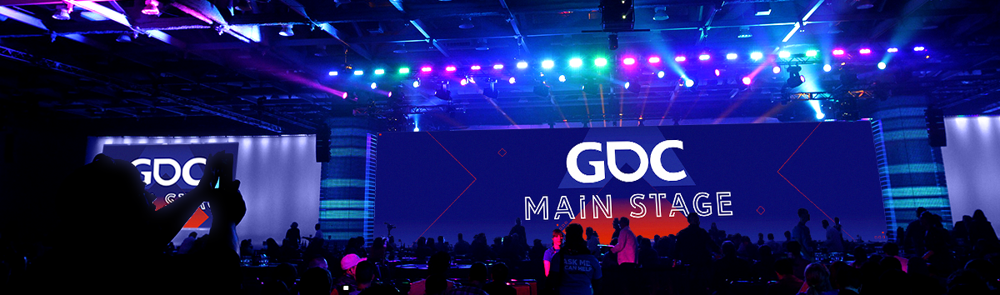
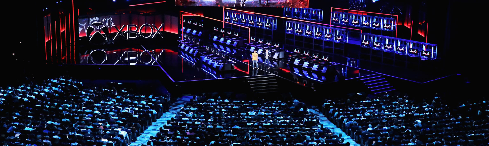
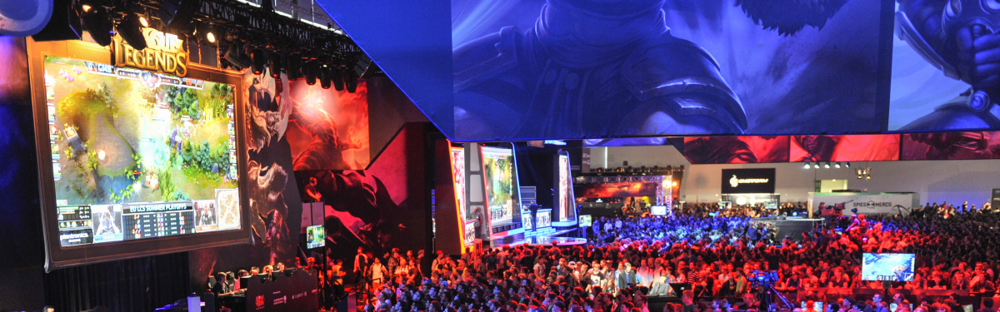
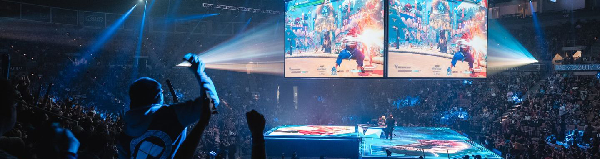
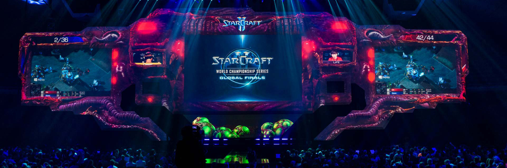

EVENTOS DE VIDEOJUEGOS
Game Developers Conference
GDC es el principal evento profesional de la industria de los juegos, que defiende a los desarrolladores de juegos y al avance de su oficio. La Game Developers Conference reúne a la comunidad de desarrollo de juegos para intercambiar ideas, resolver problemas y dar forma al futuro de la industria a lo largo de cinco días de educación, inspiración y trabajo en red. Los asistentes incluyen programadores, artistas, productores, diseñadores de juegos, profesionales de audio y líderes empresariales. Algunas características clave de GDC incluyen:
- Amplia selección de conferencias, paneles y mesas redondas.
- Presenta las últimas herramientas y servicios de desarrollo de juegos de empresas de tecnología líderes como Amazon, Epic, Google, Intel, Nvidia, Oculus y Sony.
- Espacios comunitarios dedicados donde los asistentes a GDC pueden tomar un descanso de todo el aprendizaje para relajarse y conocer gente nueva en áreas temáticas para juegos independientes, juegos retro, controladores alternativos y más.
GDC también organiza dos ceremonias de premios que reconocen la creatividad, el arte y el genio técnico de los mejores desarrolladores y juegos:
- Los Game Developers Choice Awards son la principal entrega de premios de videojuegos basada en pares que celebra a los mejores juegos y desarrolladores de la industria.
- El Independent Games Festival honra los proyectos más innovadores y ejemplares en el desarrollo de juegos independientes.
Electronic Entertainment Expo
El E3 es la convención de videojuegos más importante de la industria, en la que diversas compañías de videojuegos hablan de sus próximos lanzamientos, y algunas veces de su software y hardware. La exposición solo permitía la entrada a trabajadores de las empresas y periodistas, aunque a partir de 2017, cualquier persona podía acceder si compraba la entrada.
La Electronic Entertainment Expo se celebró por primera vez en Los Ángeles entre el 11 y el 13 de mayo de 1995. La década de los 90 arrancó con una crecida imparable de la industria del videojuego y cada vez había más jugadores en todo el mundo, pero especialmente en Estados Unidos. A pesar del éxito que estaba viviendo y que no pararía desde entonces, las compañías que se dedicaban a los videojuegos no tenían un espacio propio y tenían que conformarse con ser el árbol al fondo del escenario en las ferias de negocios sobre tecnología, donde los sistemas de sonido y las novedades sobre imagen se llevaban todo el protagonismo.
Así pues, el E3 nació como parte de la industria. La Interactive Digital Association, que más tarde pasaría a llamarse Entertainment Software Association (ESA), fue una agrupación de las principales marcas y cabeceras relacionadas con los videojuegos que unieron fuerzas para poder gritar más alto y dar visibilidad a sus productos. Así surgió la E3, con 40.000 visitantes y pensada como un punto de reunión comercial más que como un escaparate para el mundo entero; pero esto cambiaría una vez la comunidad gamer creciera.
E3 es una ventana al mundo de los videojuegos que demuestra lo mucho que ha crecido y cómo se ha traspasado esa primera función de simple entretenimiento, convirtiéndolo en un fenómeno mucho mayor. Un evento desenfadado en el que se combina la diversión con el aspecto más comercial del sector y que cada año consigue levantar las expectativas más y más.
GamesCom
Gamescom es la convención de videojuegos más grande del planeta ubicada en Alemania, si tomamos en cuenta el espacio de exhibición y el número de visitantes: hasta 335,000 personas, más de 6,000 reporteros y 700 exhibidores de 88 paises acuden a esa feria. La Gamescom está dividida en seis áreas cada una repleta de actividades, torneos, competencias o simplemente cosas que puedes hacer para convivir:
En el área principal hay actividades como Laser Tag, competencias de drift con autos a control remoto, la Deutsche Casemod Meisterschaft – aquí equipos de dos personas se enfrentan para crear el case para computadora más espectacular en categorías como: modificación en 24 horas, casemods, casecons y CE-mods. Y por último también cuenta con un área para encuentros de Paintball. Lo que es más, posee un área de deportes extremos donde los visitantes pueden tomar motocicletas o ver a los profesionales realizar sus performances. El cosplay sin duda forma parte del evento también: los disfraces y caracterizaciones más sorprendentes de la cultura geek se presentan y se enfrentan en la Aldea Cosplay de la gamescom.
Para darse un descanso del turbulento evento, existe espacio tranquilo y amistoso con decenas de actividades deportivas, de habilidad y videojuegos clásicos de los últimos 40 años. Además de futbolitos de mesa e información acerca de seguridad en internet y enseñanza virtual para que los adultos eduquen a sus niños. Además, bigFM una de las estaciones radiofónicas más importantes de Alemania, ofrece un área para que los visitantes se relajen en el exterior, disfruten del sol, un poco de música y vean a los DJs de la estación en acción.
Evo Championship Series
La Evolution Championship Series es un evento eSport anual que se enfoca exclusivamente en los videojuegos de lucha. Representa los torneos grandes y de mayor duración del mundo. Evo reúne lo mejor de lo mejor de todo el mundo en una deslumbrante exhibición de habilidad y diversión, mientras los jugadores y los fanáticos se reúnen para honrar el espíritu competitivo en un formato abierto y determinar un campeón.
Evo está abierto a cualquier persona, cuenta con estaciones disponibles para un juego libre relajado y ofrece oportunidades únicas para conocer gente de diferentes países y diferentes ámbitos de la vida que comparten su pasión. Los campeones establecidos se enfrentan a recién llegados desconocidos, y los nuevos rivales que quizás solo hayan hablado o peleado en línea se encuentran y se convierten en viejos amigos.
El torneo comenzó con el nombre original de "Battle by the Bay", un torneo de 40 participantes sobre los videojuegos Super Street Fighter II Turbo y Street Fighter Alpha 2 organizado en el año 1996 en el estado de California, que eventualmente seria trasladado a su lugar recurrente en Las Vegas. El evento cambió su nombre por el de Evolution Championship Series en el año 2002. Con el paso del tiempo, el torneo creció en concurrencia, registrando hasta más de mil participantes en el año 2009.
Blizzcon
BlizzCon es una convención celebrada por Blizzard Entertainment para celebrar sus franquicias más importantes: Warcraft, StarCraft, Diablo, Heroes of the Storm, Hearthstone y Overwatch. La convención cuenta con anuncios de juegos, avances de próximos lanzamientos, concursos de disfraces, nuevos parches de juego para los diversos juegos de Blizzard, entre otros. Las noches de clausura ha contado con conciertos de The Offspring, Tenacious D, Foo Fighters, Ozzy Osbourne, Metallica, y el grupo de Blizzard, actualmente conocido como Level 90 Elite Tauren Chieftain
A los participantes se les presenta una "bolsa botín" que contiene varios artículos de relacionados con Blizzard, incluyendo códigos canjeables por contenido de juego y figuras de colección. Además se han dado pases para las betas de los nuevos juegos de Blizzard.